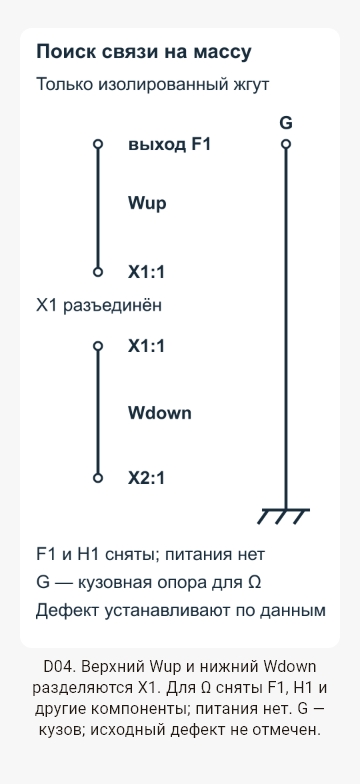
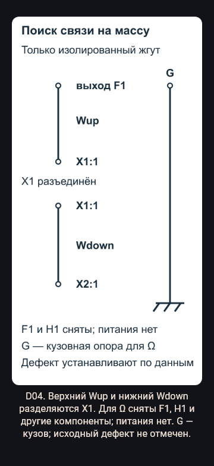
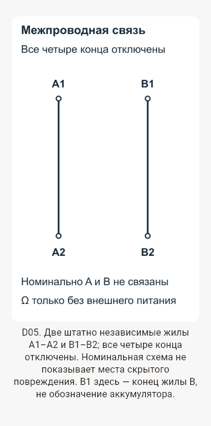
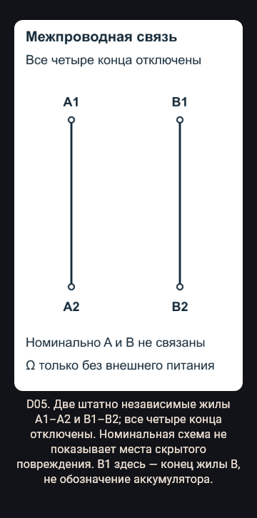
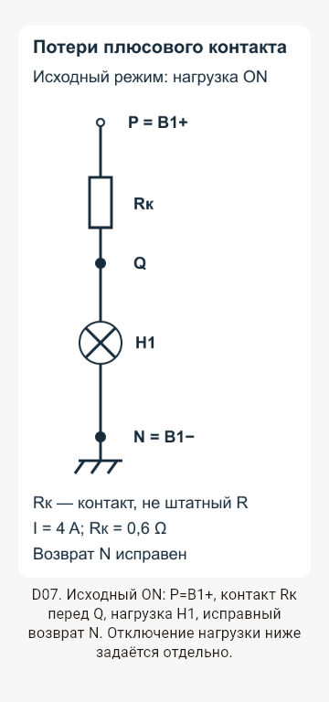
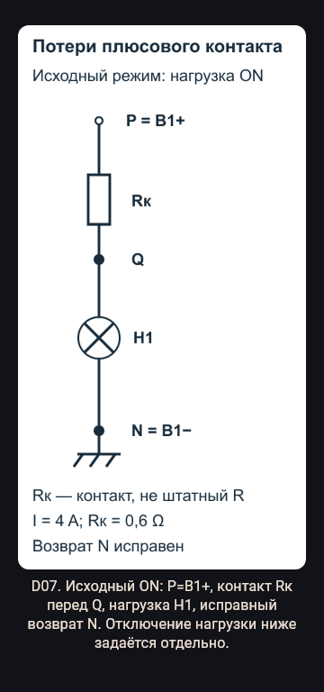
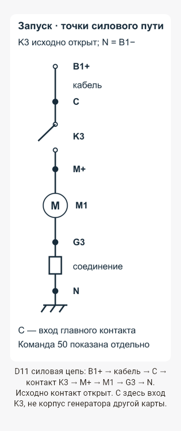
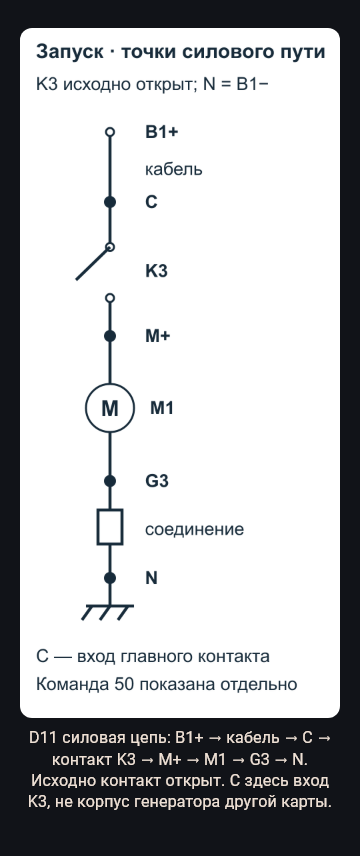

R9 — четыре авторские схемы
Снимки существующего LessonBlockRenderer: viewport 360 логических px, отступы по 20 px, текст интерфейса ×1,3. Сам PNG имеет ширину 320 логических px; его подписи не увеличиваются вместе с системным текстом. Это headless widget capture, не снимки физического Android. Для превью загружены локальные Roboto и Segoe UI Symbol (fallback стрелок); они не входят в Flutter assets.
Отчёт · Электротехническое ревью
Урок 4 и практикум: связь на массу
После разделения X1 Wup–G=OL, Wdown–G=0,2 Ω. Где продолжить безопасную локализацию? Ответ: Wdown после X1; точное место пока не определено.
SVG-исходник · PNG asset

Светлая тема, 360 px, текст ×1,3
Тёмная тема, 360 px, текст ×1,3Урок 4 и практикум: связь между жилами
Все четыре конца изолированы, продольные пути целы, A1–B1=0,4 Ω. Что доказано? Ответ: нежелательная межпроводная связь, не КЗ батареи на кузов.
SVG-исходник · PNG asset

Светлая тема, 360 px, текст ×1,3
Тёмная тема, 360 px, текст ×1,3Уроки 2, 5 и практикум: контакт P–Q
P/N=12,6, Q/N=10,2 при 4 A. Найди потерю и мощность контакта. Ответ: 2,4 V, 9,6 W. При I=0 нулевая потеря не исключает дефект.
SVG-исходник · PNG asset

Светлая тема, 360 px, текст ×1,3
Тёмная тема, 360 px, текст ×1,3Урок 7 и практикум: стартер
K3 замкнут, M+/N=11,4, G3/N=1,2. Какое U мотора и следующая граница проверки? Ответ: 10,2 V; возврат G3–N при том же безопасном режиме.
SVG-исходник · PNG asset

Светлая тема, 360 px, текст ×1,3
Тёмная тема, 360 px, текст ×1,3